अध्याय 7: some, any, much, many¶
Determiners — noun से पहले का छोटा फ़ैसला
Noun बोलने से पहले हम अक्सर एक छोटा शब्द लगाते हैं जो बताता है — कौन सा, कितना, या किसका। हिंदी में "यह, वह, कुछ, बहुत, हर, मेरा" से काम चल जाता है। English में वही "बहुत" कभी many बनता है, कभी much, और "कुछ" कभी some, कभी a few। यह फ़ैसला एक ही सवाल से होता है — और वह सवाल इस चैप्टर की चाबी है।
एक लाइन में
A determiner comes before a noun and tells us which one, how many / how much, or whose. Articles (a, an, the) भी determiners ही हैं — उनका अपना चैप्टर अलग है।
- These mangoes are sweet. कौन से? — ये वाले। (which)
- We don't have much time. कितना? — ज़्यादा नहीं। (how much)
- Is this your bag? किसका? — तुम्हारा। (whose)
7.1 पहला सवाल हमेशा — गिन सकते हो या नहीं?¶
लगभग हर determiner की गलती एक ही जगह से आती है: हमने सोचा नहीं कि noun गिना जा सकता है या नहीं। यह सवाल पहले पूछ लो, तो आधे determiners अपने आप सही लगने लगेंगे।

सबसे पहला सवाल
Determiner चुनने से पहले पूछो: noun गिना जा सकता है या नहीं? Countable हो तो एक या कई — a, many, a few, these। Uncountable हो तो — much, a little, this। कुछ दोनों के साथ चलते हैं: some, any, all, enough।
ये शब्द English में गिने नहीं जाते
work, advice, information, furniture, luggage, equipment, news, homework, traffic — इनका plural नहीं बनता और इनके साथ a / many नहीं लगता।
गिनना हो तो टुकड़ा जोड़ो: a piece of advice, two pieces of furniture, an item of news। हिंदी में "दो सलाह" बोल देते हैं, इसलिए यहाँ सबसे ज़्यादा गलती होती है।
7.2 this, that, these, those — पास या दूर¶
ये चार शब्द उँगली की तरह काम करते हैं — किसी चीज़ की तरफ़ इशारा करते हैं। दो ही सवाल: चीज़ पास है या दूर, और एक है या कई।
पास-दूर, एक-कई
this (पास, एक) · these (पास, कई) · that (दूर, एक) · those (दूर, कई)। Determiner और noun दोनों एक ही number में होने चाहिए: this book, these books।
'These type of' — सबसे आम चूक
- गलत: These type of questions are easy.
- सही: This type of question is easy. / These types of questions are easy.
- क्यों: "these" plural है, तो उसके बाद वाला noun भी plural चाहिए — types। या फिर दोनों singular रखो।
7.3 some और any — हाँ वाले और ना वाले वाक्य¶
दोनों का मतलब लगभग "कुछ" है, और दोनों countable plural और uncountable — दोनों के साथ चलते हैं। फ़र्क वाक्य के mood का है: सीधी बात है, इनकार है, या सवाल।
| वाक्य | शब्द | Example |
|---|---|---|
| सीधी (positive) बात | some | I bought some apples. |
| Negative | any | I didn't buy any apples. |
| आम सवाल | any | Do you have any questions? |
| Offer या request | some | Would you like some tea? |
| "कोई भी" (positive में) | any | Take any seat you like. |
some vs any
some — positive वाक्य, offer और request में। any — negative और आम सवाल में, या "कोई भी" के मतलब में। चाय offer करते वक़्त "some" — क्योंकि आप "हाँ" की उम्मीद कर रहे हो।
- There isn't any milk in the fridge. फ्रिज में बिल्कुल दूध नहीं है।
- Can I have some water, please? Request है, इसलिए सवाल होते हुए भी "some"।
7.4 much, many, a lot of — कितना और कितने¶
हिंदी का एक "बहुत" English में दो रास्ते लेता है। यहाँ countable का सवाल सीधा काम आता है — many गिनती वाले noun के लिए, much ढेर वाले के लिए।
| शब्द | किसके साथ | कहाँ ज़्यादा | Example |
|---|---|---|---|
| many | countable plural | हर जगह | How many students came? |
| much | uncountable | negative, सवाल | I don't have much money. |
| a lot of / lots of | दोनों | positive, बोलचाल | She has a lot of friends / patience. |
| fewer | countable | तुलना | fewer cars |
| less | uncountable | तुलना | less traffic |
much vs many
many + countable plural (many books), much + uncountable (much water)। Positive बात में "a lot of" ज़्यादा natural लगता है — दोनों के साथ चल जाता है।
'How much' या 'How many'?
How much is this shirt? — दाम (पैसा uncountable है)।
How many shirts did you buy? — गिनती।
7.5 a few / few, a little / little — "a" का जादू¶
यहाँ एक छोटा सा "a" पूरा mood बदल देता है। "a" के साथ बात positive है — थोड़ा है, और काफ़ी है। बिना "a" के बात negative है — बहुत कम है, कमी खल रही है।
'a' positive, बिना 'a' negative
a few (countable) / a little (uncountable) = थोड़ा है, काफ़ी है। few / little = बहुत कम है, कमी है। I have a little money → चाय पी सकते हैं। I have little money → मुश्किल है।
- She has a few good friends in Chennai. कुछ अच्छे दोस्त हैं — वह अकेली नहीं है।
- Few people came to the meeting. गिने-चुने लोग ही आए — उम्मीद से कम।
7.6 each, every, both, either, neither, all¶
ये शब्द group के बारे में बात करते हैं — पूरे group की, दो में से एक की, या एक-एक करके सबकी। इनकी सबसे बड़ी पहचान: इनके बाद noun singular आता है या plural, यह पक्का है।
Group वाले determiners
each, every, either, neither + singular noun + singular verb (Every student has a book)। both = दो, plural। all = तीन या ज़्यादा, या पूरा ढेर (all the milk)।
| शब्द | कब | Example |
|---|---|---|
| each | दो या ज़्यादा, एक-एक पर ध्यान | Each player gets a shirt. |
| every | तीन या ज़्यादा, पूरा group | I walk every day. |
| both | दो के दो | Both my parents work. |
| either | दो में से कोई एक | You can sit on either side. |
| neither | दो में से कोई नहीं | Neither answer is correct. |
| all | तीन+ या uncountable | All the shops were closed. |
'of' लगाओगे तो 'the / my / these' भी लगाओ
each student ✓ each of the students ✓ each of students ✗
both my hands ✓ both of my hands ✓ neither of them** ✓
7.7 enough, और my / your / their¶
दो छोटे पर रोज़ के काम के determiners। enough बताता है "जितना चाहिए उतना", और possessive determiners बताते हैं "किसका"।
enough — noun से पहले, adjective के बाद
enough* money · enough chairs — noun से पहले।
old enough · fast *enough — adjective या adverb के बाद। ✗ He is enough old. ✓ He is old enough to vote.
| Pronoun | Possessive determiner | Example |
|---|---|---|
| I | my | my phone |
| you | your | your idea |
| he / she | his / her | his car, her office |
| it | its | The dog wagged its tail. |
| we / they | our / their | our house, their children |
दो बातें जो पकड़ लेती हैं
1. एक noun के साथ एक ही determiner: the my book ✗ → my book ✓।
2. its = उसका (possessive), it's = it is। The company changed its name. "his / her" मालिक के gender से तय होता है, चीज़ से नहीं: Priya's brother = her brother।
7.8 वे गलतियाँ जो हम सच में करते हैं¶
Determiner की सबसे आम Indian-English गलतियाँ
- गलत: I have many works today.
- सही: I have a lot of work today.
-
क्यों: "work" (काम) uncountable है — इसका plural नहीं बनता और "many" नहीं लगता। "works" का मतलब कलाकृति होता है: the works of Premchand।
-
गलत: Each students must bring an ID card.
- सही: Each student must bring an ID card.
-
क्यों: each और every के बाद noun हमेशा singular। Plural चाहिए तो "each of the students" या "all students" बोलो।
-
गलत: Can you give me some informations?
- सही: Can you give me some information?
-
क्यों: information, advice, furniture, luggage — सब uncountable। इनमें -s कभी नहीं लगता।
-
गलत: There are less buses on Sunday.
- सही: There are fewer buses on Sunday.
-
क्यों: Buses गिन सकते हो, तो "fewer"। "less" uncountable के लिए: less traffic, less noise।
-
गलत: I don't have some money.
- सही: I don't have any money.
- क्यों: Negative वाक्य में "any"। "some" positive बात और offer के लिए है।
7.9 प्रैक्टिस — Determiners¶
अभ्यास 1
How ___ sugar do you take in your tea?
- much
- many
- few
- a few
संकेत: Sugar गिन सकते हो?
उत्तर
much
Sugar uncountable है — हम 'दो sugar' नहीं बोलते। Uncountable के साथ 'much', और 'How much' से मात्रा पूछते हैं।
अभ्यास 2
Don't worry, we still have ___ time before the train leaves.
- a little
- little
- a few
- few
संकेत: बात positive है — थोड़ा समय है, काफ़ी है।
उत्तर
a little
Time uncountable है, इसलिए 'little' वाला pair। और 'don't worry' बता रहा है कि बात positive है — तो 'a' के साथ: a little।
अभ्यास 3
Look at ___ birds on that far tree!
- those
- these
- this
- that
संकेत: दूर हैं और कई हैं।
उत्तर
those
'that far tree' — चीज़ें दूर हैं, और 'birds' plural है। दूर + कई = those।
अभ्यास 4
I asked two shopkeepers, but ___ of them had the charger.
- neither
- either
- both
- none
संकेत: दो में से कोई नहीं।
उत्तर
neither
दो लोग थे और दोनों के पास charger नहीं था — 'दो में से कोई नहीं' = neither। 'none' तीन या ज़्यादा के लिए ज़्यादा आता है।
अभ्यास 5
Is there ___ milk left in the fridge?
संकेत: आम सवाल है।
उत्तर
any
आम सवाल और negative में 'any' लगता है। 'some' तब आता जब हम कुछ offer या request कर रहे होते।
अभ्यास 6
Every child ___ a gift at the party. (get — present simple)
संकेत: 'every' के बाद singular।
उत्तर
gets
'every child' singular है, इसलिए verb भी singular — gets। हिंदी में 'हर बच्चे को' सुनकर plural लगता है, पर English में 'every' अकेले एक को गिनता है।
अभ्यास 7
इस वाक्य में गलत शब्द पर tap करो।
Sir, I have many works to finish today.
उत्तर
गलत शब्द: works.
सही रूप: Sir, I have a lot of work to finish today.
'work' (काम) uncountable है — 'works' नहीं बनता, और 'many' भी नहीं लगता। 'a lot of work' या 'much work' बोलो।
अभ्यास 8
गलत शब्द ढूँढो।
Each students has a locker.
उत्तर
गलत शब्द: students.
सही रूप: Each student has a locker.
'each' के बाद noun हमेशा singular — student। Verb 'has' पहले से singular है, वह सही है।
अभ्यास 9
एक गलती है — ढूँढो।
She gave me some useful advices about the interview.
उत्तर
गलत शब्द: advices.
सही रूप: She gave me some useful advice about the interview.
'advice' uncountable है, इसका plural नहीं होता। एक सलाह गिननी हो तो 'a piece of advice'।
अभ्यास 10
Determiner को सही noun से जोड़ो।
| A | B |
|---|---|
| many | minutes |
| much | patience |
| a few | chairs |
| a little | furniture |
उत्तर
many — chairs; much — furniture; a few — minutes; a little — patience
chairs और minutes गिन सकते हो — many, a few। furniture और patience नहीं गिन सकते — much, a little।
अभ्यास 11
सही क्रम में वाक्य बनाओ।
शब्द: to / not / is / old / enough / He / drive
उत्तर
He is not old enough to drive
'enough' adjective के बाद आता है — old enough। 'enough old' गलत है।
अभ्यास 12
यह लाइन बोलो — 'information' के आखिर में -s नहीं लगाना।
उत्तर
बोलो: Could you give me some information about the course
बोल-बोलकर 'informations' की आदत तोड़नी पड़ती है। Request है, इसलिए 'some' — और 'information' बिना -s।
आगे क्या करो
अपनी एक छोटी लिस्ट बनाओ: work, advice, information, luggage, furniture, news। हर बार इनमें से कोई शब्द बोलो तो रुककर सोचो — "गिन सकता हूँ?" एक हफ़्ते में यह सवाल आदत बन जाएगा।